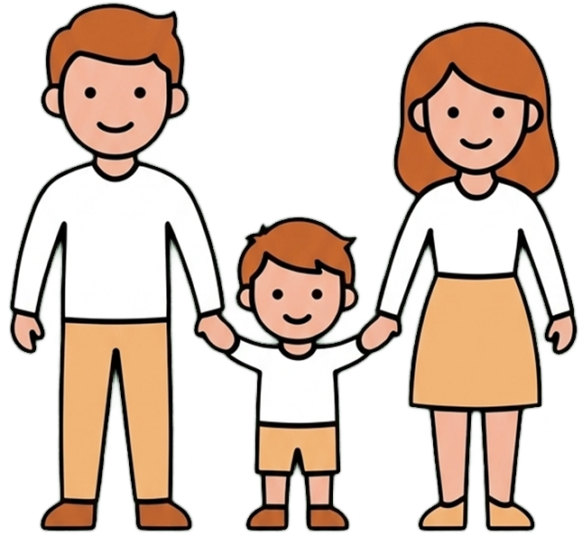
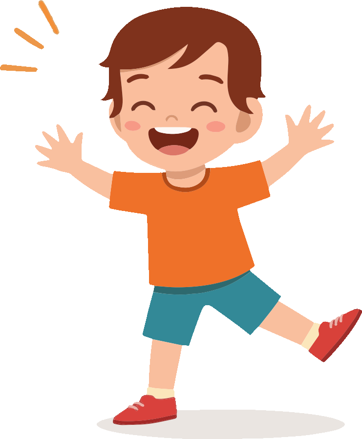
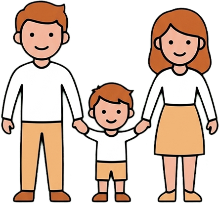

يحتاج الجسم إلى السكر للطاقة، والإنسولين هو "المفتاح" الذي يُدخل السكر للخلايا. في سكري الأطفال (النوع الأول)، يتوقف البنكرياس عن إنتاج الإنسولين، مما يؤدي لتراكم السكر في الدم.

قائمة لما يجب أن يحمله الطفل دائماً عند الخروج:

تذبذب القراءات ليس ذنب الطفل؛ ابحث عن السبب وعالجه بهدوء.
ذكّره دائماً بقدرته على اللعب، الرياضة، والتفوق كغيره من الأطفال.
درّبه تدريجياً على فحص السكر بنفسه لبناء ثقته وتقليل خوفه.
علّمه الإجابة ببساطة وثقة عن أي أسئلة تخص جهازه.